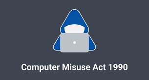
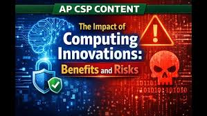

Most people share personal information online every day without really thinking about what happens to it afterward. When you create an account, shop online, or use social media, companies collect information such as your name, email address, location, and browsing activity. They often use this data to improve their services or show ads that match your interests. While this can make online experiences more personalized, it also raises concerns about privacy. Learn more from the Federal Trade Commission (FTC) .
One of the biggest risks of collecting and storing data is the possibility of a data breach. If a company's security is weak, hackers may be able to break in and steal sensitive information. Once personal data is exposed, it can be used for identity theft, fraud, or other crimes. According to the Cybersecurity and Infrastructure Security Agency (CISA) , keeping systems updated and following cybersecurity best practices can help reduce these risks.
A famous example is the 2017 Equifax data breach. Hackers gained access to the personal information of about 147 million people. The incident showed how much damage can happen when personal data is not properly protected and why organizations need to take data security seriously.
Computers, servers, networks, and other digital systems are valuable resources that help people work, learn, and communicate. Unfortunately, not everyone uses them responsibly. Some individuals misuse computing resources by spreading malware, sending spam, stealing information, or disrupting online services. The National Institute of Standards and Technology (NIST) provides guidance on protecting technology and networks.
One common example of misuse is a botnet. A botnet is a group of devices that have been infected with malware and are secretly controlled by a hacker. These infected devices can then be used to launch attacks against websites or online services. The CISA Cybersecurity Best Practices page recommends regular software updates and strong security settings.
The Mirai Botnet is one of the most famous examples of this type of attack. In 2016, Mirai infected thousands of internet-connected devices and used them to overwhelm major websites with traffic. This event showed how vulnerable connected devices can be if they are not properly secured.

Unauthorized access happens when someone gains access to information or systems that they are not supposed to use. Hackers often look for weaknesses they can exploit, such as weak passwords, outdated software, or people who are not aware of common scams. The FBI Cyber Division reports that cybercrime continues to be a major threat.
One of the most common ways attackers gain access to information is through phishing. Phishing scams are designed to trick people into giving away passwords, financial information, or other sensitive data. The CISA Phishing Guidance provides tips on how to recognize these scams.
A real-world example occurred in 2021 when cybercriminals targeted Colonial Pipeline. The attackers gained access through compromised login credentials and launched a ransomware attack that disrupted fuel deliveries across parts of the United States.
Technology has changed almost every part of daily life. From smartphones and cloud storage to artificial intelligence and social media, computing innovations have made it easier to communicate, learn, and access information. The Association for Computing Machinery (ACM) discusses how advances in computing continue to create opportunities.
Even though technology offers many benefits, it can also create challenges. Social media helps people stay connected, but it can also spread misinformation. Artificial intelligence can improve productivity, but it may raise concerns about privacy and bias. The World Economic Forum explores both the positive and negative effects of emerging technologies.
Artificial intelligence is a good example of a technology that has both benefits and risks. AI tools can help students learn, assist researchers, and improve workplace efficiency. However, they can also be used to create misleading information or raise concerns about data privacy.
